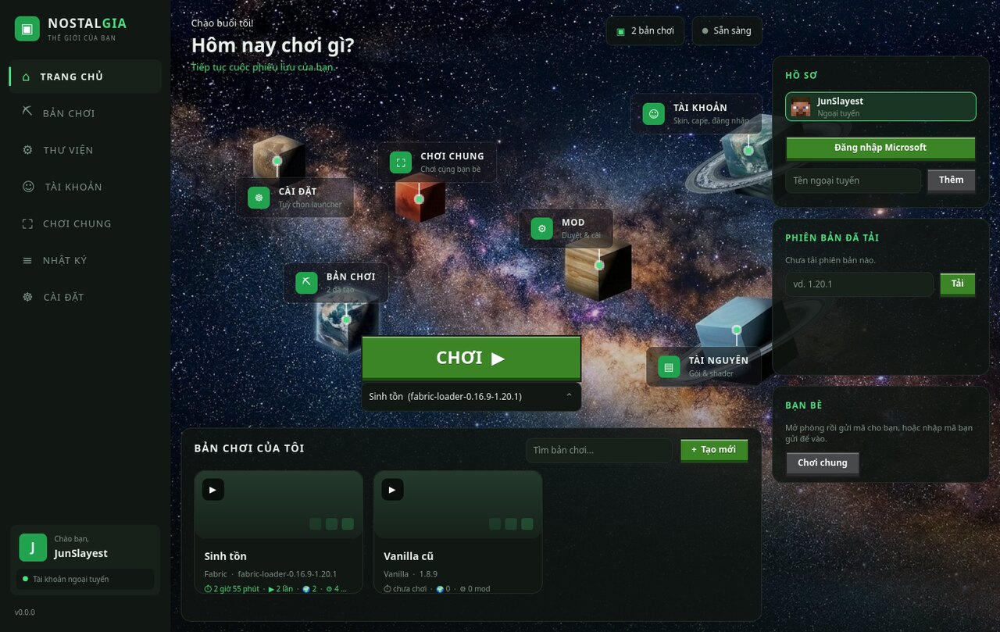
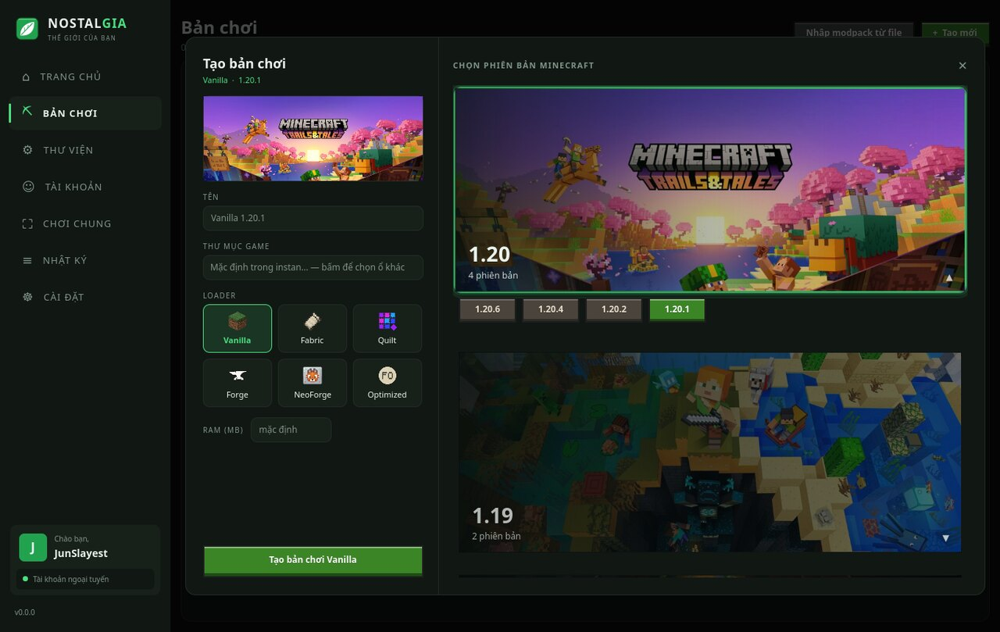
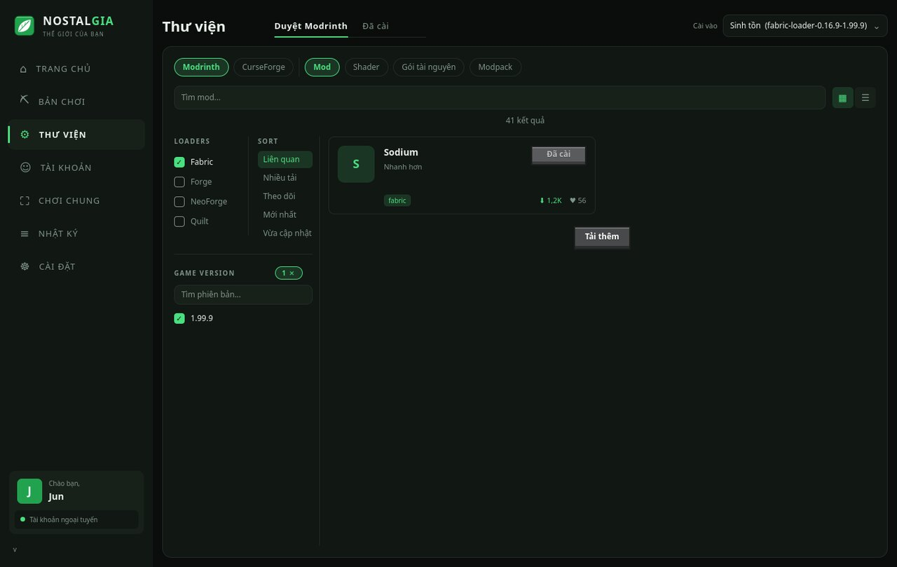
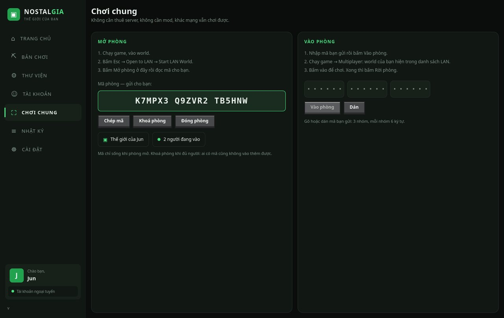
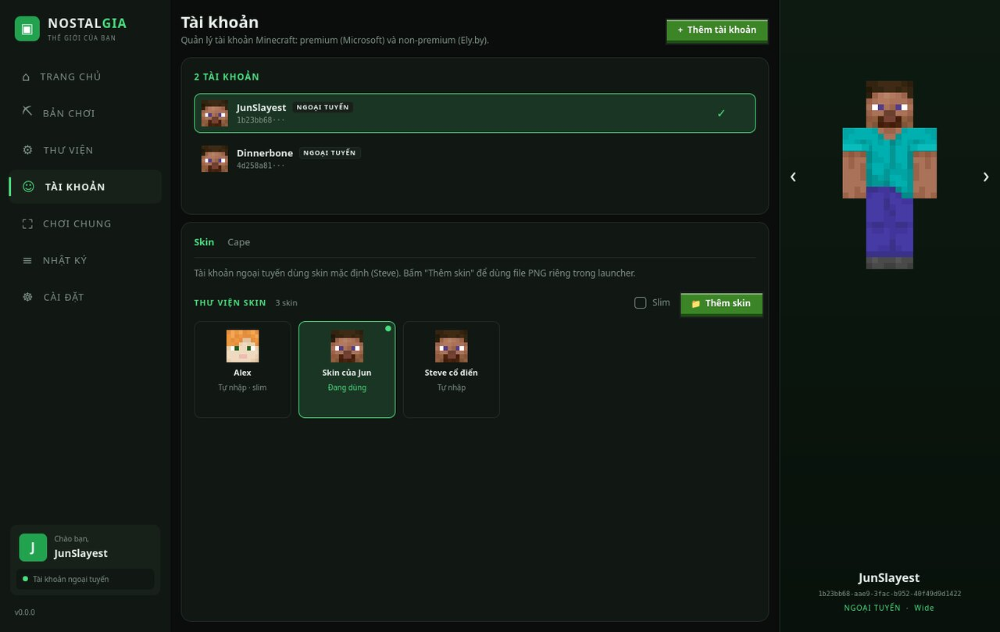
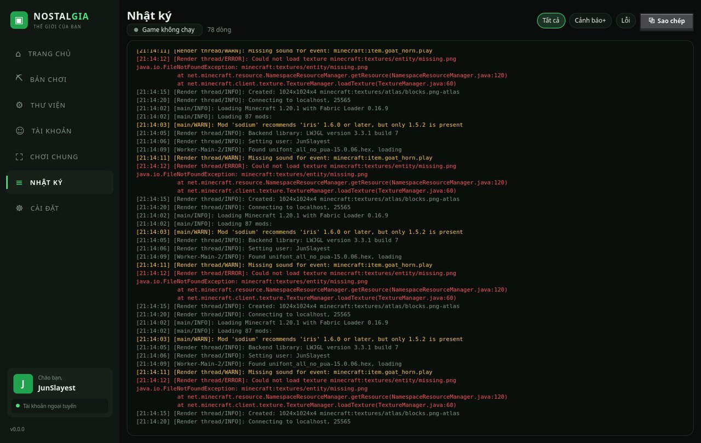

Thế giới quen thuộc.Khởi đầu mới.
Minecraft launcher miễn phí, không quảng cáo.
Chọn bản chơi, thêm mod, chơi LAN với bạn bè qua relay. Tài khoản Microsoft và Ely.by đều vào được.
Bắt đầu
Vào game trong ba bước
01
Tải launcher
Trang tự nhận hệ điều hành và đưa đúng một file.
02
Tạo bản chơi
Chọn phiên bản, thêm Fabric/Forge và mod yêu thích.
03
Bắt đầu chơi
Bấm CHƠI. Java tự tải nếu máy chưa có.
Giao diện
Bảy trang, bảy màu






Có sẵn
Không cần cài thêm gì
Java tự lo
Thiếu Java đúng đời thì launcher tự tải, không bắt đi tìm bản cài.
Modpack kéo-thả
Thả file .mrpack hoặc .zip vào cửa sổ là xong. CurseForge và Modrinth đều nhận.
LAN qua relay
Chơi chung với bạn mà không mở cổng router, không cần Hamachi.
Nhập từ launcher cũ
Đang dùng launcher khác thì mang bản chơi và tài khoản sang.
Tự cập nhật
Có bản mới thì báo ngay trong app, tải và áp một lần bấm.
Mã nguồn mở
GPL-3.0. Toàn bộ mã đọc được trên GitHub, không có gì chạy ngầm.